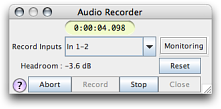

The Audio Recorder is opened by choosing "Insert Recording..." from the timeline menu of a waveform document. It will let you record audio from input channels of your soundcard (or internal computer signals when using Jack Audio Router).
To create a new document with recorded audio, first choose "New Empty Document" from the file menu. Here, specify the recording resolution and number of channels. Next choose "Insert Recording..." from the timeline menu.
Note that the recorded audio piece will have the number of channels, bitdepth and sampling rate from its parent document. The "Record Inputs" combo box shows a list of all input configurations that match the current number of document channels. If this list is blank, close the recorder, and open the "I/O Setup" first from the windows menu. In the I/O setup, select the inputs tab and create a new configuration for the desired number of channels and their mapping to physical (sound card) channels.
Note that the recorder does not do any inplace sample rate conversion. Therefore, when your document has 48 kHz and SuperCollider is running at 44.1 kHz, you will get a 44.1 kHz recording which is played back at the wrong speed. Use the "Resampling" module in FScape to convert this document to the correct pitch afterwards.
When you have checked the "Channel Meters" in the view menu, as soon as you open the recorder and choose an input source, you will see the input signal on these meters. Additionally, you see a headroom gadget that monitors the peak amplitude of all channels. The display can be reset by pressing the "Reset" button. NOTE: as of v0.63, headroom display will not work if channel meter view is disabled.
You may wish to monitor the input signal by pressing the "Monitoring" toggle button. WARNING: if your speakers are picked up by the recording microphones, you may produce a feedback that can damage both your ears and your gear. It is advised to turn down speaker volume or switch to headphones before enabling monitoring. Monitoring automatically uses the output configuration that the normal document playback uses (including solo/mute, panorama, master volume and limiter).
Press "Record" to begin recording. Note that there is no waveform indicator during recording. The recording is saved to the temporary folder as specified in the preferences, and is inserted in the parent document as soon as you press "Stop". Be sure to check the available disk space before recording.
NOTE: due to the internal workings of the DiskOut UGen, the actual recording may be up to one buffer (c. 750ms) shorter than expected, so be sure to record one extra second of sound when your punch out is critical.
If you wish to cancel a recording and start over, press the "Abort" button.